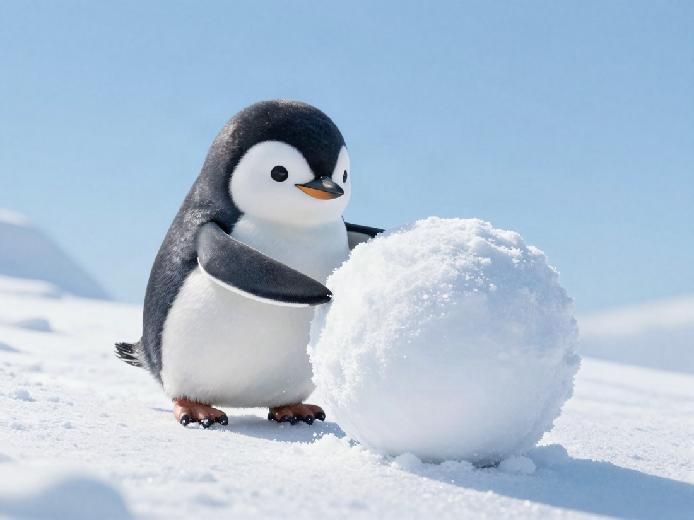

Only Output Makes Life Roll.

To begin with, when life moves, it is often not because of my own power.
Work, chances, and meetings usually come from other people.
To borrow that power, I have to be found.
In other words, I have to put something out.
Input ends inside me, so no one comes from outside.
By the way, I am writing this at 3 p.m. on a day off.
On a normal day, I am surely tired at this time.
But for some reason, I am not tired now. 😳
On holiday evenings, my body is usually heavy, and my mood goes down with it.
That was normal for me.
I think the 20-minute nap helped too.
But today, while I was writing, I stayed full of energy.
Maybe putting things out is less tiring.
At least, it was true today.
Good.
Starting today, I will lose weight from Knowledge Metabo. 🙂↕️